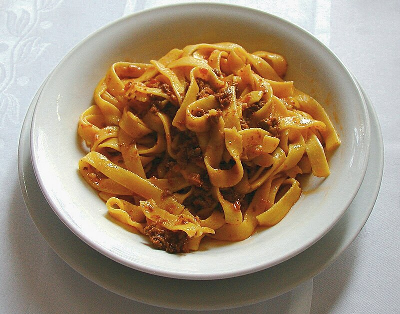

Ragu

Description
Ragu is a meat-based sauce that is commonly served with pasta.
The recipes vommon characteristics are the presence of meat and the fact
that all are sauces for pasta. The most typical is ragu alla bolognese.
Ingredients
- Olive oil
- Onion
- Celery stick
- Carrot
- Minced beef
- Tomato puree
- Red wine
- Beef stock
Steps
- Heat the oil and the pan.
- Add the minced celery, onion and carrot.
- Stir in minced beef.
- Add tomato puree and wine.
- Season and leave to cook on low heat for 1hr.
Back